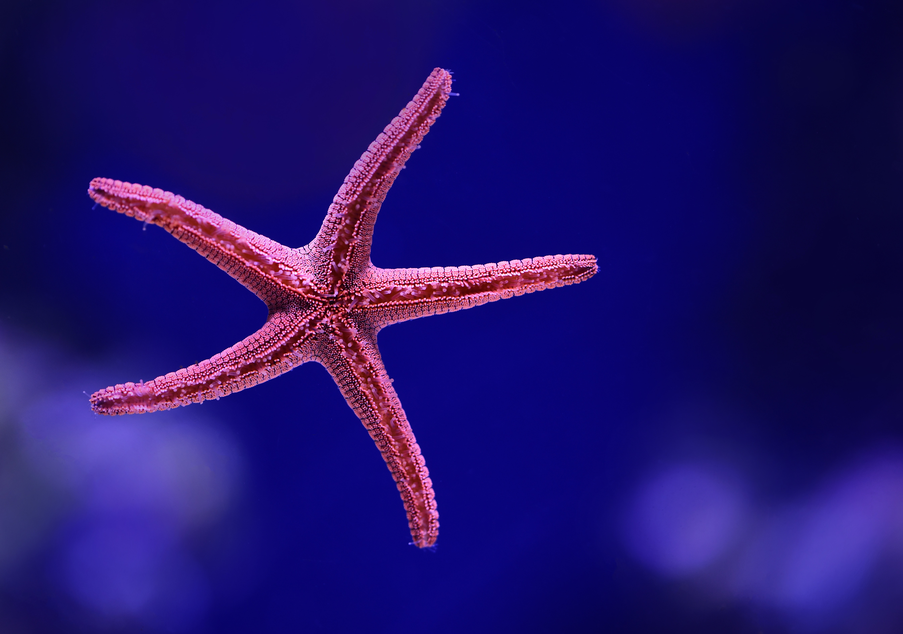
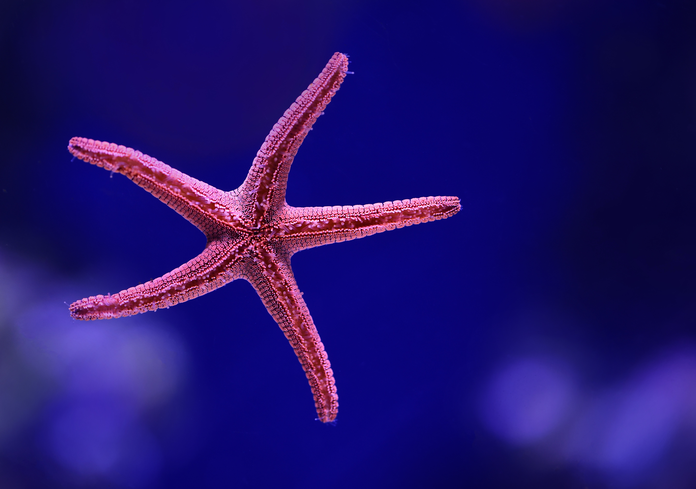

|
||
|
|
|
(Portal Paula, s. f.)
- Estrategia Nacional sobre Biodiversidad de México y Plan de Acción (2016-2030)
- Estrategia de Integración para la Conservación y el Uso Sustentable de la Biodiversidad en el Sector Pesquero y Acuícola (2016-2022)
- Certificación de playas mexicanas con el distintivo Blue Flag
- Lanzamiento de las campañas “Por nuestros mares, sin plástico está bien” y “Protección de los Océanos, Mares y Costas de México” por la Secretaria de Medio Ambiente y Recursos Naturales SEMARNAT
- Comités de Vigilancia Ambiental Participativa
- Comisión Intersecretarial para el Manejo Sustentable de Mares y Costas CIMARES
- Comisión Nacional de Coordinación de Investigación Oceanográfica CONACIO
(Leyva Ortiz, 2020)

 


marina del planeta, lo que en México significa aproximadamente 1.2 millones de kilómetros cuadrados o 120
millones de hectáreas de nuestra Zona Económica Exclusiva."
(Quadri de la Torre, 2021)